http://www.quantum-dynamic.eu/doc/feynman85_qmc_optics_letters.pdf
Quantum Mechanical Computers
量子力学コンピューター
By Richard P. Feynman
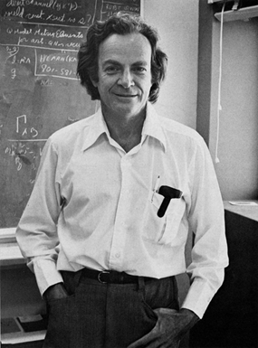
リチャード・P・ファインマンは、カリフォルニア工科大学の理論物理学教授です。
この記事は、1984年に開催されたCLEO/IQEC会議における彼の基調講演に基づいています。
はじめに
この研究は、物理法則によるコンピュータの物理的限界を分析する取り組みの一環です。例えば、ベネット1は、計算に伴う自由エネルギーの散逸について綿密な研究を行い、それが実質的にゼロであることを発見しました。彼は私に、量子力学と不確定性原理による限界という問題を提示しました。私は、動作部品が原子で作られる場合の明らかなサイズ制限を除けば、これらの要因による根本的な限界は存在しないことを発見しました。
ここでは理想的な機械について考察します。小さな欠陥の影響については後ほど考察します。本研究は原理的な研究であり、コンピュータとして機能しうるシステムのハミルトニアンを示すことを目的としています。最も効率的なシステムであるかどうか、あるいはそれをどのように実装するのが最適かといったことは、本研究の関心事ではありません。
量子物理学の法則は時間的に可逆であるため、そのような可逆法則に従う計算エンジンを検討する必要があります。この問題は、すでに Benett1、そして Fredkin と Toffoli2 によって提起され、多くの考察がなされてきました。ここでは馴染みがないかもしれませんので、ここでこの点について概説し、その際に Benett2(3?)の結論についても簡単に概説しておきます。なぜなら、我々の量子システムを解析する際に、これらの結論をすべて確認することになるからです。
コンピュータサイエンスの成果として、相互接続された基本素子の適切な複雑さのネットワークによって汎用コンピュータを構成できるというものがあります。通常の古典的な分析に従えば、相互接続は、局所的な1と0を表す2つの標準電圧のいずれかを伝送する理想的な配線であると想像できます。基本素子はNOTとANDの2つだけです（実際には、NAND = NOT ANDの1つの要素だけで十分です。なぜなら、一方の入力を1に設定すると、出力はもう一方の入力のNOTとなるからです）。これらは図1に記号化されており、出力配線には、入力配線のさまざまな組み合わせに応じた論理値が出力されます。

図 1. プリミティブ要素
論理的な観点から見ると、配線を詳細に検討する必要があります。なぜなら、他のシステム、特に量子システムでは、配線そのものが存在しない可能性があるからです。実際には、2本の配線が1本に接続されている場合のFAN OUTと、配線が交差している場合のEXCHANGEという、さらに2つの論理プリミティブがあることがわかります。通常のコンピュータでは、NOTプリミティブとNANDプリミティブはトランジスタによって実装されており、おそらく図2のようになります。
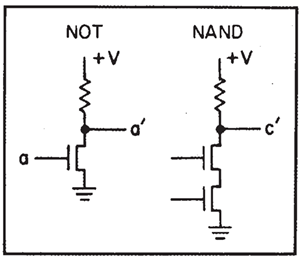
図2. NOTおよびNANDのトランジスタ回路
このようなプリミティブで構成された理想的なコンピュータを動作させるために必要な最小の自由エネルギーはいくらでしょうか？
例えば、AND 回路が出力ラインを操作する場合、エントロピー変化が \(\ln(2)\) 単位になる前の値に関わらず、\(c^\prime\) は 2 つの値のいずれかに決定されます。これは、温度 \(T\) で \(kT\ln(2)\) の熱発生を表します。長年にわたり、これは計算を行う際に消費されなければならないプリミティブステップごとの熱量の絶対的な最小値を表すと考えられてきました。
この問題は現時点では学問的な問題です。
実際の機械では、熱放散の問題がかなり懸念されますが、実際に使用されているトランジスタシステムは、約 \(10^{10}kT\) の熱を放散します。
Bennett3 が指摘したように、これは、電線の電圧を変化させるには、抵抗を通して接地に電圧を放出し、再び電圧を上げるには、再び抵抗を通して電線に電荷を供給する必要があるためです。
エネルギーをインダクタンスなどのリアクタンス素子に蓄えることができれば、この熱放散は大幅に低減できます。
しかし、現在の技術ではシリコンウェハ上に誘導素子を作るのは非常に難しいようです。
自然界の DNA 複製機でさえ、複製されたビットあたり約100 \(kT\) のエネルギーを消費しています。現状ではこの \(kT\ln(2)\) という数値から非常に遠いため、この値でさえ高すぎる、最小値は実質的にゼロであると主張するのはばかげているように思えます。しかし、後ほどさらにばかげたことを言って、現在の \(10^{11}\) 個の原子ではなく、1個の原子に書き込まれたビットを考えてみましょう。このようなナンセンスは、私のような教授にとっては非常に面白いものです。皆さんにも、興味深く、楽しんでいただければ幸いです。
Benett が指摘したのは、この以前の制限は、不可逆なプリミティブを使用する必要がないため誤りであるということです。計算は、可逆なプリミティブのみを含む可逆マシンで行うことができます。そうすれば、必要な最小自由エネルギーは、計算の複雑さや論理ステップの数とは無関係になります。どちらかといえば、出力解のビットあたり \(kT\) です。
しかし、これはコンピュータをクリアしてさらに使用できるようにするために必要な自由エネルギーと考えられるかもしれませんが、答えを使って何をするか、つまり結果を別の地点に送信した場合の結果に含まれる情報の一部とも考えられるかもしれません。これは、可逆コンピュータで無限小速度で計算する場合にのみ理想的に達成される限界です。
可逆マシンによる計算
ここでは、汎用機械 (Toffoli4) を作るために使用できる3つの可逆プリミティブについて説明します。1つ目はNOTです。これは明らかに情報を失わず、可逆であり、再度NOTを実行することで反転します。従来の記号は対称ではないため、代わりにワイヤ上に×を使用します（図3aを参照）。
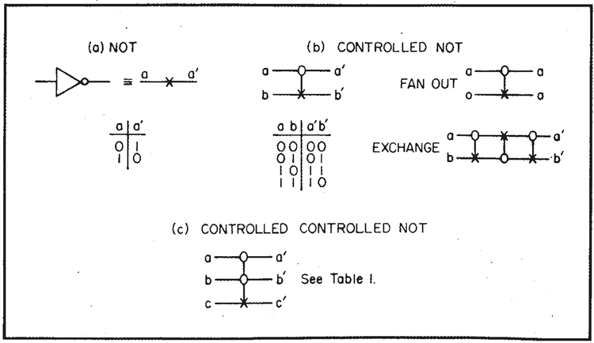
図3. 可逆プリミティブ
次は、CONTROLLED NOT(制御されたNOT）と呼ぶものです（図3b参照）。2つの入力線 \(a\) と \(b\)、そして2つの出力線 \(a^\prime\) と \(b^\prime\) があります。\(a^\prime\) は常に \(a\) と同じで、制御線です。制御がアクティブ化された場合 \(a = 1\)、出力される \(b^\prime\) は \(b\) の否定になります。それ以外の場合、\(b\) は変化せず、\(b^\prime = b\) となります。入力と出力の値の表を図3に示します。
この動作は、単に繰り返すことで反転されます。
量 \(b^\prime\) は実際には \(a\) と \(b\) の対称関数で、XOR（排他的論理和）と呼ばれます。つまり、\(a\) または \(b\) で、いずれか一方のみです。同様に、これは \(a\) と \(b\) の 2 を法とする和でもあり、\(a\) と \(b\) を比較するために使用できます。比較の結果、異なる値であることを示す信号として 1 が返されます。この関数 XOR 自体は可逆ではないことに注意してください。例えば、値が 0 の場合、それが \((a, b) = (0,0)\) から来たのか、それとも \((1,1)\) から来たのかはわかりませんが、あいまいさを解決するために、もう一方の線 \(a^\prime = a\) を保持します。
CONTROLLED NOTを表すには、制御線に○を置き、制御される側の線に×を垂直線で接続します。
この要素は FAN OUT も提供します。\(b = 0\) の場合、\(a\) が行 \(b^\prime\) にコピーされることがわかります。この COPY 機能は後で重要になります。また、EXCHANGE も提供します。3 回の CONTROLLED NOT を 2 つの行で連続して使用し、制御行を交互に選択することで、行間の情報の交換を実現します（図3b）。
これらの 2 つの要素の組み合わせだけでは、任意の論理関数を実現するには不十分であることがわかります。3 つの線を含む要素が必要です。ここでは、CONTROLLED CONTROLLED NOT と呼ばれるものを選択しました。ここでは（図3cを参照）、2 つの制御線 \(a,b\) があり、出力には変化せず、両方の線がアクティブ（\(a = 1\) かつ \(b = 1\)）の場合にのみ、3 番目の線 \(c\) を NOT \(c\) に変更します。それ以外の場合は \(c^\prime = c\) です。3番目の線の入力 \(c\) が 0 に設定されている場合、明らかに \(a\) と \(b\) が両方とも 1 の場合にのみ 1（\(c^\prime= 1\)）になり、AND 関数が提供されます（表1を参照）。
\((a,b)\) の 3 つの組み合わせ、すなわち \((0,0), (0,1),\) \((1,0)\) はすべて AND \((a,b)\) 関数に同じ値 0 を与えるため、この曖昧さを解決するには 2 ビットが必要です。これらのビットは出力の行 \(a, b\) に保持されるため、関数は（実際には関数自体によって）反転できます。AND 関数は、\(a\) と \(b\) の合計の繰り上がりビットです。
これらの要素から、次のようなことが分かっています。
これらを組み合わせることで、あらゆる論理回路を組み立てることができます。実際、コンピュータサイエンスは、汎用コンピュータを作成できることを示しています。これを小さな例で説明しましょう。まず、図4に示すように、CONTROLLED CONTROLLED NOT、次にCONTROLLED NOTを順に使用して加算器を作成できます。入力行として \(a\)、\(b\)、および 0 から、1 行目に元の \(a\)、2 行目に合計、3 行目に繰り上がりを生成します。

図4. 加算器
より複雑な回路は全加算器です（図5参照）。これは、（以前の加算からの）キャリー \(c\) を 2 つのライン \(a\) と \(b\) に加え、さらに 0 入力のライン \(d\) を持ちます。この回路では 4 つの基本要素を組み合わせる必要があります。この合計、つまり 3 つの \(a,b,\) と \(c\) の合計とキャリーに加えて、他の2つのラインから 2 つの情報が得られます。1 つは元の \(a\) であり、もう 1 つは経路上で計算された中間値です。
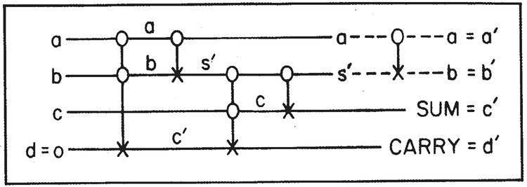
図5. 全加算器
これは可逆システムの特徴で、出力として必要な値だけでなく、ある程度の不要な値も生成します。この特定のケース、そしてすべてのケースで言えることですが、不要な値を入力値そのものにすることができます。図5の点線で示されているように、最初の 2 行にCONTROLLED NOT を追加するだけで、不要な値は \(a\) と \(b\) になり、少なくとも2 行の入力値になります。（この回路は簡略化できますが、説明のためにこのようにしています。）
このように、様々な組み合わせによって、\(n\) ビットを \(n\) ビットに可逆的に変換する汎用論理ユニットを作成できます。解こうとしている問題自体が可逆的であれば、余分なガベージは発生しないかもしれませんが、一般的には、操作を逆順にするために必要な情報を保存するために、いくつかの余分な行が必要になります。言い換えれば、従来のシステムで可能なあらゆる関数に加えて、ガベージも作成できるということです。このガベージには、プロセスを反転するために必要な情報が含まれています。
では、ゴミはどれくらいになるのでしょうか？一般に、求めている出力データが \(k\) ビットの場合、入力と \(k\) ビットの 0 から始めて、結果として入力と出力だけを生成でき、それ以上のゴミは生成されません。これは可逆的です。なぜなら、出力と入力が分かれば、もちろんすべてを元に戻すことができるからです。この命題は常に可逆的です。この根拠は図6に示されています。
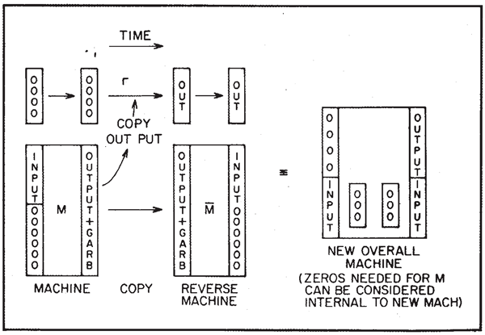
図6. ゴミの除去
マシン \(M\) があると仮定します。マシン \(M\) は、入力と多数の 0 から始めて、目的の出力に加えて、ある程度の余分なデータ（いわゆるガベージ）を生成します。ここで、CONTROLLED NOT のシーケンスによって実行できるコピー操作が可能であることを確認しました。したがって、元々空のレジスタがあり、出力用の&ビットが用意されている場合、プロセッサ \(M\) が動作した後、\(M\) からの出力をこの新しいレジスタにコピーできます。
その後、反対のマシン、つまり逆の \(M\)、つまり リバースマシン を構築することができます。このマシンは、\(M\) の出力とゴミを、入力と 0 に変換します。したがって、マシン全体として見ると、出力用レジスタの \(k\) 個の 0 と入力から始まり、最終的にそれらの \(k\) 個の 0 が出力データで占められ、入力データが最終製品として繰り返されます。\(M\) マシンでゴミを保持するために元々必要だった 0 の数は、再び 0 に復元され、新しい完全なマシン（\(M\)、\(M\)、コピー）内の内部配線と見なすことができます。
全体として、私たちは目指していたことを達成しました。したがって、ゴミは入力データの繰り返しよりも大きくなる必要はありません。
量子力学コンピュータ
次に、量子力学の法則を用いて、このようなコンピュータをどのように構築できるかを考えてみましょう。相互作用する部品からなるシステムのハミルトニアンを記述します。このシステムは、汎用コンピュータとして機能する大規模システムと同じように動作します。もちろん、大規模システムも量子力学に従いますが、熱浴などとの相互作用によって、事実上不可逆になる可能性があります。
私たちが目指すのは、コンピュータを可能な限り小型でシンプルなものにすることです。ハミルトニアンは、内部のあらゆる計算動作を詳細に記述しますが、もちろん、入力の入力（初期状態の準備）や出力の読み取りに関わる外部とのやり取りは記述しません。
そのようなコンピュータはどれほど小さくできるでしょうか？
例えば、数字はどれほど小さくできるでしょうか？
もちろん、数字は 1 と 0 のビットで表すことができます。ここで考えたいのは、2状態システム、つまり「アトム」があると仮定することです。すると、\(n\) ビットの数字は「レジスタ」の状態、つまり \(n\) 個の 2 状態システムの集合で表されます。
各原子が 2 つの状態 （\(| 1 \rangle\) と \(| 0 \rangle\) と呼ぶ）のどちらかにあるかどうかによって、もちろん任意の数を表すことができます。そして、その数は、各原子が特定の瞬間にどの状態にあるかを判定（測定）することによって、そのようなレジスタから読み取ることができます。したがって、1ビットは、単一の原子が2つの状態 （\(| 1 \rangle\) と \(| 0 \rangle\) と呼ぶ状態）のいずれかにあることによって表されます。
その時私たちが何をしなければならないかは、例を考えれば理解できます。
CONTROLLED CONTROLLED NOTの例です。 G を、3 つの原子 \(a, b\) と \(c\) に対する何らかの操作とします。この操作は、\(a, b,\) と \(c\) の元の状態を新しい適切な状態 \(a^\prime, b^\prime, c^\prime,\) に変換します。これにより、\(a^\prime, b^\prime,\) と \(c^\prime\) と \(a, b,c,\) 間の接続は、\(a, b,\) と \(c\) がワイヤを表し、\(a^\prime, b^\prime\) と \(c^\prime\) が CONTROLLED
CONTROLLED NOT の出力ワイヤである場合に予想されるとおりになります。
ここで理解していただきたいのは、現時点ではデータをある位置から別の位置に移動させようとしているのではなく、単に変更しようとしているということです。実際の有線コンピュータでは、ある配線の電圧が別の配線の電圧に切り替わりますが、ここで具体的に行っているのはより単純なことです。つまり、3 つの原子が特定の状態にあり、ある操作が実行されてその状態が新しい値 (\(a^\prime, b^\prime, c^\prime\)) に変化するというものです。
そうすると、数学的な形式\(| a^\prime, b^\prime, c^\prime\rangle\) における状態は、単に \(| a, b, c\rangle\) に作用する何らかの演算 G となります。量子力学では、状態変化演算子は線形演算子であるため、G は線形であると仮定します。したがって、\(G\) は行列であり、\(G,\) の行列要素 \(G_{a^\prime, b^\prime, c^\prime, a, b, c}\) は、表１にある要素を除いてすべて 0 です。表１にある要素は当然 1 です。
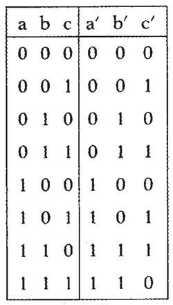
表1
表１は、CONTROLLED CONTROLLED NOT の真理値表を表す表と同じです。この演算は可逆であることは明らかで、\(G^*G = 1\) と表すことができます。ここで、* はエルミート随伴行列を意味します。つまり、\(G\) はユニタリ行列です。(実際には、\(G\) は実行列 \(G^* = G\) でもありますが、これは特殊なケースです。) より具体的には、この特殊な \(G\) を \(A_{ab,c}\) と書きます。他の原始要素を表すには、添字の数が異なる同じ行列 A を使用します。
簡単な例を挙げると、NOTは\(A_a\)で表され、
単純行列
\[
\begin{bmatrix}
0 & 1 \\
1 & 0
\end{bmatrix}
\]
これは2行2列の行列で、様々な方法で表現できます。様々な表記法がありますが、ここでは生成消滅演算子を用いて定義します。この場合、1 行の \(a\) 上で演算することを考えます。アルファベットを節約するため、\(a\) を行列と呼ぶことにします。
\[
a=
\begin{bmatrix}
0 & 1 \\
0 & 0
\end{bmatrix}
\]
これは原子 \(a\) の 1 を消滅させて 0 に変換します。\(a\)は、状態 \(| 1\rangle\) を \(| 0\rangle\) に変換する演算子です。しかし、原子の状態が元々 \(| 0\rangle\) であった場合、演算子 \(a\) は数値 0 を生成します。つまり、状態を変えるのではなく、その状態に作用して数値 0 を生成するだけです。もちろん、このものの共役は以下です。
\[
a^*=
\begin{bmatrix}
0 & 0 \\
1 & 0
\end{bmatrix}
\]
これは、0 の状態を操作することで、それを 1 の状態に変換するという意味で、作成します。言い換えると、\(| 0\rangle\) から \(| 1\rangle\) に移動します。\(| 1\rangle\) 状態を操作する場合、それより上の状態は作成できないため、数値 0 が与えられます。他のすべての演算子
2×2行列は、これらの \(a\) と \(a^*\) で表すことができます。例えば、積\(a^*a\) は行列
\[
a^*a=
\begin{bmatrix}
1 & 0 \\
0 & 0
\end{bmatrix}
\]
これを \(N_a\) と呼ぶこともできます。状態が \(| 1\rangle\) のときは 1、状態が \(| 0\rangle\) のときは 0 です。
これは原子の状態が表す数値です。同様に、積
\[
aa^*=
\begin{bmatrix}
0 & 0 \\
0 & 1
\end{bmatrix}
\]
\(1-N_a\) であり、アップ状態の場合は 0、ダウン状態の場合は 1 となります。1 を
対角行列を表すために使用します。
\[
\begin{bmatrix}
1 & 0 \\
0 & 1
\end{bmatrix}
\]
このすべての結果として、\(aa^* + a^*a = 1\) となります。
したがって、NOT を生成する演算子 NOT の行列は、\(A_a = a + a^*\) であり、さらにもちろん、\(A_a^*A_a = 1, A_a\) は可逆であり、ユニタリ行列であることがわかります。
同様に、CONTROLLED NOTの行列\(A_{a,b}\)も計算できます。CONTROLLED NOTの値の表を見ると、次のように書けることがわかります。
\[
a^*a (b + b^*) + aa^*
\]
最初の項では、\(a^*a\) は直線 \(a = 1\) という条件を選択します。この場合、\(b + b^*\) を \(b\) に適用します。2 番目の項は直線 \(a\) が 0 であるという条件を選択します。この場合、\(b\) には何も起こらず、b の演算子に関する単位行列が暗黙的に適用されます。これは \(1 + a^*a (b + b^* -1)\) と書くこともできます。1 は直接通過するすべての直線を表しますが、\(a\) が 1 の場合、直線 b を変更せずに NOT を挿入することでこれを修正します。
CONTROLLED CONTROLLED NOTのマトリックスは次のとおりです。
\[
A_{ab,c} = 1 + a^* ab^*b (c+c^*-1)
\]
おそらく、あなたも見ることができるでしょう。
次の問題は、これらのシーケンスからなる一般的な論理ユニットの行列はどのようなものかということです。例として、前に説明した全加算器の場合を考えてみましょう（図5を参照）。一般的なケースでは、\(a,b,c\) と \(d\) で表される4本の配線があります。\(d\) が常に 0 である必要はなく、オブジェクトが一般的にどのように動作するかを説明します（\(d\)が1に変更された場合、\(d^\prime\) がその NOT に変更されます）。これは新しい数値 \(a^\prime, b^\prime, c^\prime\) と \(d^\prime\) を生成し、このシステムでは、\(a, b, c, d\) とラベル付けされた4つの原子が \(| a, b, c, d\rangle\) とラベル付けされた状態にあると想像できます。そして、行列 \(M\) が動作して、これらの同じ4つの原子が、この論理ユニットに適切な状態 \(| a^\prime, b^\prime, c^\prime, d^\prime\rangle\) にあるように見えるように変化させます。つまり、\(|\psi_{IN}\rangle\) が4ビットの入力状態を表す場合、\(M\) は4ビットの出力状態 \(| \psi_{OUT}\rangle = M | \psi_{IN}\rangle\) を生成する行列です。
例えば、入力状態が \(| 1, 0, 1, 0\rangle\) の場合、出力状態は \(| 1, 0, 0, 1\rangle\) となることが分かっています。最初の 2 行はそのままなので、最初の 2 つの \(a^\prime, b^\prime\) は 1,0 となり、最後の 2 つの \(c^\prime, d^\prime\) は 0,1 となります。これは、最初の入力の最初の 3 ビット \(a, b, c,\) の和と繰り上がりを表し、\(d = 0\) となるためです。加算器の行列 \(M\) は、5 つの連続する基本演算の結果として簡単に見ることができ、したがって、これらの基本オブジェクトを表す 5 つの連続する行列の行列積となります。
\[
M= A_{a,b} A_{b,c} A_{bc,d} A_{a,b} A_{ab,d}
\]
一番右に書かれている最初の要素は \(A_{ab,d}\) です。これは CONTROLLED CONTROLLED NOT を表し、\(a\) と \(b\) は CONTROL 行、NOT は \(d\) 行に現れます。図 5 の図を見れば、残りの要素が何を表しているかがすぐにわかります。例えば、最後の要素 \(A_{a,b}\) は、CONTROL 行 \(a\) に CONTROL 行、NOT 行 \(b\) に NOT 行がある CONTROLLED NOT があることを意味します。この行列は、積となるすべての \(A\) がユニタリ行列であるため、ユニタリ行列の性質 \(M^*M = 1\) を持ちます。つまり、\(M\) は逆演算であり、\(M^*\) はその逆演算です。
一般的な問題は次のようになります。
\(A_1,A_2, A_3, \cdots A_k\) を、ある論理ユニットで \(n\) 行に対して実行したい一連の演算とします。同じ目的を達成するために必要な \(2^n\times 2^n\) 行列 \(M\) は、積 \(A_k...A_3A_2A_1\) です。ここで、各 \(A\) は単純行列です。より単純な要素の作成方法がわかっている場合、この \(M\) を物理的に生成するにはどうすればよいでしょうか。
一般に量子力学では、ハミルトニアン\(H\)を持つシステムにおいて、時刻\(t\)における出力状態は\(e^{iH_t}\psi_{IN}\)です。ここで\(\psi_{IN}\)は入力状態です。与えられた特別な時刻\(t\)において、\(M\)がそのような非可換行列の積であるとき、\(M = e^{iHt}\)を生成するハミルトニアンを、行列自体の単純な性質から見つけようとすると、非常に困難に思えます。
しかし、ある特定の時点において、\(e^{iHt}\) を（\(1 + iHt - H^2t^2/2-..\) のように）展開すると、演算子 H が 1 回、2 回、3 回…と無数の任意の回数作用し、全体の状態はこれらの可能性の重ね合わせによって生成されることがわかります。これは、これらの A の合成の問題を次のように解くことができることを示唆しています。
レジスタ内の \(n\) 個の原子に、全く新しい \(k + 1\) 個の原子のセットを追加します。これを「プログラムカウンタサイト」と呼びます。\(q_i\) と \(q_i^*\) を、プログラムサイト \(i\) の \(i = 0\) から \(k\) までの消滅演算子と生成演算子と呼びます。例として、電子が 1 つの空きサイトから別の空きサイトへ移動することを考えてみましょう。サイト i が電子で占有されている場合、その状態は \(| 1\rangle\) であり、サイトが空の場合、その状態は \(| 0\rangle\) です。
ハミルトニアンとして次のように書きます。
\[
\begin{align}
H =& \sum_{i=0}^{k-1} q_{i+1}^*q_iA_{i+1} \\
\\
&+ \text{複素共役} \\
\\
=& q_1^* q_0 A_1 + q_2^* q_1 A_2 \\
\\
&+ q_3^* q_2 A_3 + \cdots \\
\\
&+ q_0^* q_1 A_1^* + q_1^* q_2 A_2^* \\
\\
&+ q_2^* q_3 A_3^* + \cdots
\end{align}
\]
最初に注目すべき点は、すべてのプログラムサイトが空いている場合、つまりすべてのプログラム原子が初期状態で状態 0 にある場合、ハミルトニアンのすべての項が消滅演算子で始まり、したがって 0 になるため、何も起こらないということです。
2 つ目に注目すべき点は、プログラムサイトのうち1つだけが占有され（状態\(| 1\rangle\)）、残りは占有されていない（状態 \(| 0\rangle\) ）場合、これは常に真であるということです。実際、状態\(| 1\rangle\)にあるプログラムサイトの数は保存量です。このコンピュータの動作では、どのサイトも占有されていない（この場合は何も起こらない）か、1 つのサイトだけが占有されていると仮定します。通常の動作では、2 つ以上のプログラムサイトが両方とも占有されることはありません。
初期状態として、サイト 0 が占有されており、\(| 1\rangle\) 状態、その他すべてが空で、\(| 0\rangle\) 状態から始めましょう。その後、ある時点で、最後のサイト \(k\) が \(| 1\rangle\) 状態（したがって、その他すべて \(| 0\rangle\)状態）にあることが判明した場合、\(n\) レジスタに行列 \(M\) が乗算され、期待通り \(A_k \cdots A_2A_1\) が得られたとします。
これがどのように機能するかを説明しましょう。レジスタが任意の初期状態 \(\psi_{in}\) から始まり、プログラムカウンタのサイト 0 が占有されていると仮定します。すると、ハミルトニアン全体の中で、ハミルトニアンが連続的に作用するときに最初に作用できる項は、最初の項 \(q_1^*q_0A_1\) のみです。\(q_0\) はサイト番号 0 を空サイトに変更し、\(q_1^*\) はサイト番号 0 を占有サイトに変更します。したがって、項 \(q_1^*q_0\) は、占有サイトを位置0から位置 1 に移動するだけの項です。しかし、これは12個のレジスタ原子のみに作用する行列 \(A_1\) に乗算されるため、レジスタ原子の初期状態に\(A_1\)が乗算されます。
さて、ハミルトニアンが 2 回目に演算すると、この最初の項は何も生成しません。なぜなら、\(q_0\) は 0 番の位置に 0 を生成するからです。なぜなら、その位置は空いているからです。今、演算できる項は 2 番目の項、\(q_2^*q_1A_2\) です。これは占有されている点を移動させることができるからです。これを「カーソル」と呼びます。カーソルは位置 | から位置 2 に移動できますが、行列 \(A_2\) はレジスタ上で演算を行うため、レジスタには行列 \(A_2A_1\) が演算されていることになります。
ハミルトニアンの最初の行を見てみると、それが全てだとすれば、ハミルトニアンが連続的な順序で演算すると、カーソルは 0 から \(k\) まで連続的に移動し、\(n\) 個のレジスタ原子、つまり行列 \(A\) を、合計 \(M\) を構築したい順序で次々に演算していくことになります。
しかし、ハミルトニアンはエルミートでなければならないため、これらすべての演算子の複素共役が存在する必要があります。ある段階で、カーソルがサイト番号 2 にあり、レジスタに対して行列 \(A_2A_1\) が作用しているとします。ここで、その占有を新しい位置に移動させる \(q_2\) は、必ずしも1行目から来る必要はなく、2行目から来るかもしれません。実際には、カーソルを位置 2 から位置1に戻す \(q_1^*q_2A_2^*\) から来ている可能性もあります。
ただし、この場合、演算子 \(A_2^*\) がレジスタに対して演算を行うため、レジスタに対する演算子全体はこの場合 \(A_2^*A_2A_1\) となります。しかし、\(A_2^*A_2\) は 1 なので、演算子は \(A_1\) のみです。したがって、カーソルが位置 1 に戻されると、結果として、実際には演算子 \(A_1\) のみがレジスタに対して演算を行ったことになります。つまり、ハミルトニアンのさまざまな項によってカーソルが前後に移動するにつれて、\(A\) が累積するか、または再び減算されるのです。
例えば、どの段階でも、カーソルが \(j\) サイトまで移動している場合、\(A_1\) から \(A_j\) までの行列は \(n\) レジスタ上で連続して演算されています。\(j\) サイト上のカーソルが 0 から \(j\) に直接移動してそこに到達したか、さらに進んで戻ったか、あるいは何らかのパターンで行ったり来たりしたかは問題ではありません。最終的に状態 \(j\) に到達していれば問題ありません。
したがって、カーソルがサイト \(k\) にある場合、行列 \(M\) が初期状態に対して意図したとおりに操作した \(n\) レジスタ原子の正味結果が得られます。
では、このコンピュータをどのように操作すればよいのでしょうか。まず、入力ビットをレジスタに書き込み、カーソルをサイト0に配置します。次に、サイト \(k\) で、例えば電子を散乱させて、サイト \(k\) が空であるか、またはサイト \(k\) にカーソルがあるかを確認します。サイト \(k\) にカーソルを見つけたら、カーソルを削除してプログラム行に戻れないようにします。こうすることで、レジスタに出力データが含まれていることが分かります。これで、自由に測定できるようになります。もちろん、測定やこれらすべての決定には、コンピュータの一部ではない外部の要素が関与しています。コンピュータは、データの入力と取り出しの両方において、最終的には外部世界と相互作用する必要があるのは間違いありません。
数学的には、このプログラム行におけるカーソルの上下の伝播は、ハミルトニアンに演算子Aがない場合と全く同じであることがわかります。言い換えれば、これは、1次元における強束縛電子やスピン波の伝播でおなじみの、非常によく知られた波を表しているだけです。行を上下に伝播する波があり、波のパケットなどが存在することもあります。
このコンピュータの動作を次のように改良し、弾道的な動作にすることができます。実際に計算に使用している内部のサイトに加えて、前後に多数のサイトのラインを作成します。これは、\(q_i\) のインデックス \(i\) の値が 0 未満で \(k\) より大きい場合とまったく同じです。各値には行列 \(A\) がなく、1 が乗算されるだけです。そうすれば、スピンチェーンは長くなり、カーソルを最初のサイト 0 に正確に配置するのではなく、異なる振幅のカーソルを異なるサイトに配置することで、ほぼ一定の運動量の幅広いパケットである初期の入射スピン波を表すことができます。
このスピン波は弾道的にコンピュータ全体を通り抜け、反対側からプログラムサイトのラインに追加した外側のテールへと伝わります。そこでスピン波が存在するかどうかを判断し、別の場所に誘導してカーソルを捕捉することが容易になります。このように、論理ユニットは弾道的な動作をすることができます。
これが本質的な点であり、少なくともコンピュータ科学者にとっては、汎用コンピュータが作れることを示しています。なぜなら、どんな論理ユニットでも作れるのであれば、汎用コンピュータも作れることを彼は知っているからです。これが、要素の合成や分岐が可能な汎用コンピュータを表しているかどうかは、ある程度の経験がなければ完全には明らかではありませんが、これについては後ほど詳しく説明します。
不完全性と不可逆な自由エネルギー損失
しかし、不完全性の問題など、より詳細に議論したい疑問がいくつかあります。
この装置には多くの欠陥の原因がありますが、まず最初に検討したいのは、プログラム線に沿った結合部の係数が正確に等しくない可能性です。線は非常に長いため、実際の計算ではわずかな不規則性でも散乱の可能性がわずかながら生じ、波は正確に弾道的に伝播するのではなく、往復運動することになります。
例えば、これらのサイトが通常の物理原子の基板上に構築されるようにシステムが構築されている場合、これらの原子の熱振動によって結合がわずかに変化し、不完全性が生じます（小さな固定不完全性では、カーソルが捕捉される可能性のある浅い捕捉領域が存在するため、このようなノイズも必要になります）。そこで、計算ステップごとに（つまり、カーソル移動ステップごとに、\(i \rightarrow i+1\)）、カーソルの運動量がランダム化されるまで散乱する確率 （\(1/p\) は輸送平均自由行程）が、例えば\(p\)とすると仮定します。pはかなり小さいと仮定します。
非常に長い計算では、波が最初から反対側の端まで到達するまでに非常に長い時間がかかる可能性があります。これは、散乱のために何度も往復しなければならないためです。その場合、外力を使ってカーソルをプログラム行に沿って引っ張るという方法があります。例えば、カーソルが電子で、ある空き領域から別の空き領域へと移動するとします。これは、電線に沿って電子を引き寄せようとする電場と似ています。電線の抵抗は、散乱の不完全性や確率によって生じます。このような状況下では、この外力によってどれだけのエネルギーが消費されるかを計算できます。
この分析は非常に簡単に行うことができます。これは、平均自由行程を持つ電子のほぼ古典的な分析です。カーソルが散乱するたびに、カーソルが前方と後方にランダムに散乱すると仮定します。もちろん、機械が動作するためには、カーソルが後方に移動する確率よりも前方に移動する確率の方が高くなければなりません。したがって、散乱が発生した場合のエントロピー損失は、カーソルが前方に移動する確率の対数を、カーソルが後方に移動する確率で割った値になります。
これは、(前方確率 - 後方確率) / (前方確率 + 後方確率) で近似できます。これが散乱ごとに失われるエントロピーです。さらに興味深いのは、純計算ステップごとに失われるエントロピーです。もちろん、これは単純にこの数値の p 倍です。計算ステップごとのエントロピーコストは次のように書き直すことができます。
\[
p v_D/v_R
\]
ここで、\(v_D\)はカーソルの移動速度、\(v_R\)はカーソルのランダム速度です。
あるいは、必要に応じて、計算が実行できる最小時間（つまり、すべてのステップが常に順方向であった場合）を \(p\) で乗じ、実際に許容される時間で割ったものになります。
したがって、ステップあたりの自由エネルギー損失は、計算を実行できる最小時間（kT × p × ）を、実際に計算に費やす時間で割った値となります。これはベネットによって初めて導かれた式です。係数（p）は惰性係数であり、すべてのサイトがカーソルをランダムに散乱させるわけではないが、その確率は小さいという状況を表します。
1ステップあたりのエネルギー損失は \(kT\) ではなく、2 つの係数で割った値であることがお分かりいただけるでしょう。1つは (\(1/p\)) で、機械をどれだけ完璧に構築できるかを測るものであり、もう1つは計算にかかる時間の長さに比例します。これはカルノーエンジンに非常に似ており、可逆性を得るためには非常にゆっくりと動作させる必要があります。\(p\) が 0、つまり無限の時間を許容する理想的な機械では、平均のエネルギー損失は0になる可能性があります。
不確定性原理は、通常、エネルギーと時間の不確実性に関係しますが、直接的な制約ではありません。
私たちのコンピュータには計算を行う装置がありますが、カーソルの到着時間と、反対側の出力レジスタの測定値（つまり、計算を完了するのにかかる時間）は、確定した時間ではありません。これは確率の問題であり、したがって、計算が実行される時間にはかなりの不確実性があります。
カーソルエネルギーの不確実性に関連する損失はありません。少なくとも、計算ステップ数に依存する損失はありません。もちろん、完璧なマシンで弾道計算を行う場合、元の波にいくらかのエネルギーを投入する必要がありますが、そのエネルギーは、プログラム行の末尾から出てくる最終波から除去することができます。演算子の不確実性と測定の不可逆性に関連するすべての問題は、入出力関数に関連しています。
コンピュータの量子的な性質自体によって、それ以上の制限は発生しません。計算ステップの数に比例する制限もありません。
このようなマシンでは、不完全性のために、他にも非常に多くの問題が生じます。例えば、データを保持するレジスタでは、クロストーク、つまりレジスタ内の原子同士の相互作用、あるいはレジスタ内の原子とプログラム行で発生している事象との直接的な相互作用といった、想定外の問題が発生します。言い換えれば、ハミルトニアンには、私たちが書いたもの以外にも、小さな項が存在する可能性があるのです。
これを完全に実装するまでは、分析するのは非常に困難です。少なくともこれらの問題の一部は、通常のコンピュータで研究されてきた誤り訂正符号などの技術によって、通常の方法で解決できます。しかし、このコンピュータに固有の実装が見つかるまでは、これらの影響をどのように分析すればよいかわかりません。しかし、実際には、これらは非常に重要であると思われます。このコンピュータは非常に繊細なため、これらの欠陥は大きな混乱を引き起こす可能性があります。
計算ステップに必要な時間は、ハミルトニアンの各項における相互作用の強度、つまりエネルギーに依存します。ハミルトニアンの各項が 0.1 電子ボルトのオーダーであると仮定すると、弾道的にカーソルが各ステップを移動する時間は、\(6×10^{15}\) 秒のオーダーとなるようです。これは大幅な改善ではなく、トランジスタの遅延時間の現在の値と比べて4桁程度に過ぎず、多くの光学システムで達成可能な非常に短い時間よりもそれほど短くはありません。
実装の簡素化
我々は、計算可能なシステムの量子力学的ハミルトニアンを見つけるという当初の目的を達成しました。そして、それが我々が言うべきことの全てです。しかし、実装を簡素化するためのいくつかの問題について検討することは興味深いことです。我々が記述したハミルトニアンには、5 つの原子間の特殊な相互作用を伴う可能性のある項が含まれています。例えば、そのうち 3 つはレジスタ内にあり、制御論理否定（CONTROLLED CONTROLLED NOT）を表し、残りの2つはプログラムカウンタ内の隣接する 2 つのサイトとして使用されます。
これを配置するのはかなり複雑かもしれません。問題は、もっと単純な部品で実現できるかどうかです。実は、実際に可能です。相互作用する原子が3つだけになるように設定できます。最初に使用した要素ではなく、新しい基本要素から始めます。NOT は正しくありませんが、それに加えて、単に「スイッチ」があります（Priese5も参照）。
ハミルトニアンにおけるその複素共役項\(q^*cp+r^*c^* p+\)があるとします（いずれの場合も、レジスタ原子にはアルファベットの前半の文字を使用し、プログラムサイトにはアルファベットの後半の文字を使用します）。図7を参照してください。これは、\(c\)が元々\(| 1\rangle\)状態にある場合、\(p\)にあるカーソルは\(q\)に移動し、\(c\)が\(| 0\rangle\)状態にある場合、\(p\)にあるカーソルは\(r\)に移動するという意味でスイッチです。
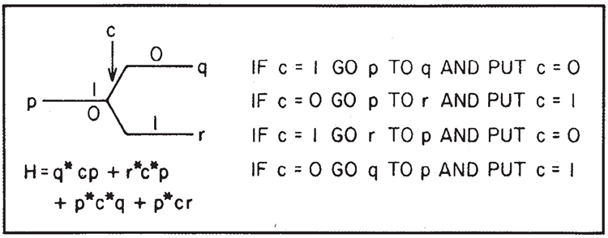
図7. スイッチ
この操作の間、制御原子 \(c\) の状態は変化します。（制御原子の状態が変化しない式、例えば \(q^*c^*cp+r^*cc^*p\) とその複素共役を書くことも可能ですが、特に利点も欠点もありませんので、ここではより単純な形をとります。）
複素共役はこれを逆順にします。
しかし、カーソルが \(q\) にあり、\(c\) が \(| 1\rangle\) の状態にある場合（またはカーソルが \(r, c\) にあり、\(| 0\rangle\) の状態にある場合）、\(H\) は 0 となり、カーソルは反射されます。すべての回路を構築し、初期状態を選択することで、通常の動作ではこのような状況が発生しないようにし、理想的な弾道モードが動作するようにします。
このスイッチを使うと、いくつかのことが可能になります。例えば、図8のようにCONTROLLED NOTを生成できます。
スイッチ \(a\) が演算を制御します。
カーソルが \(s\) から始まると仮定します。\(a=1\) の場合、プログラムカーソルは上行に移動し、\(a = 0\) の場合、下行に移動します。どちらの場合も、最終的にはプログラムサイト \(t\) で終了します。

図8. スイッチによる CONTROLLED NOT
これらの図では、水平線または垂直線がプログラムアトムを表します。スイッチは対角線で表され、ボックス内にはレジスタを操作する他の行列（NOT \(b\)など）を配置します。具体的には、制御NOTのこの小さなセクションのハミルトニアンは、\(s\) から始まり、\(t\) で終わると考えた場合、以下のように表されます。
\[
\begin{align}
H_c(s,t) =& s_M^*as+t^*a^*t_M \\
\\
&+t_M^*(b+b^*)s_M+s_N^*a^*s \\
\\
&+t^*at_N+t_N^*s_N+c.c.
\end{align}
\]
（\(c.c.\) は、前のすべての項の複素共役を加算することを意味します。）
ここでは量子力学に特有のあらゆる種類の複雑さを引き起こす可能性のある2 つのルートがあるように見えますが、実際にはそうではありません。カーソルが \(s\) に到達するまでに、コンピュータシステム全体が \(a\) の明確な状態で開始された場合、原子 \(a\) は依然として何らかの明確な状態にあります（ただし、以前のコンピュータ操作により初期状態と異なる可能性があります）。したがって、2 つのルートのうちの1つだけが採用されます。
式は \(s_N^*t_N\) 項を省略し、\(t_N=s_N\) とすることで簡略化できます。
この場合、一方の経路（カーソルサイトが2つ）が他方の経路（カーソルサイトが1つ）よりも長いことを心配する必要はありません。干渉は発生しないからです。
結合されたサイトのチェーンに、サイト間の相互結合が同じである任意の数のサイトのチェーンを追加しても、散乱は発生しません（伝送線路の整合インピーダンスに類似）。
これらのことをさらに詳しく検討するために、ピースを組み合わせることを考えます。ピース（図9参照） \(M\) は、相互作用するパーツの論理単位として表現できます。この論理単位では、最初の入力カーソルサイトのみを \(s_M\)、反対側の最後の入力カーソルサイトを \(t_M\) と表します。\(s_M\) と \(t_M\) の間にある残りのプログラムサイトはすべて\(M\)の内部パーツとみなされ、 \(M\) にはレジスタが含まれます。\(s_M\) と \(t_M\) のみが外部的に結合可能なサイトです。
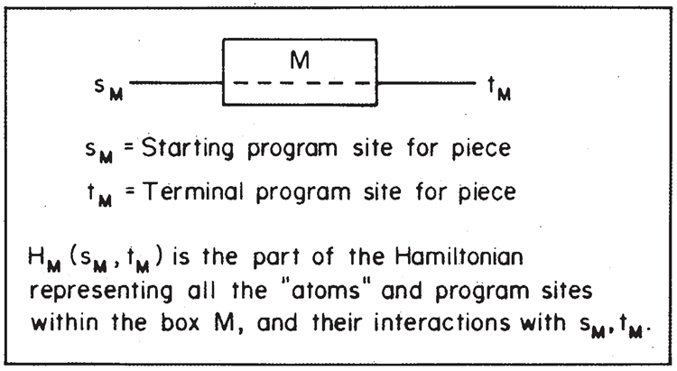
図9. 1つの「ピース」
このサブセクションのハミルトニアンを\(H_M\)と呼び、\(s_M\)と\(t_M\)を入力プログラムサイトと出力プログラムサイトの名前として\(H_M(s_M, t_M)\)と表記します。したがって、\(H_M\)は、ボックス内のすべての原子とそれらの外部の開始サイトと終了サイトを表すハミルトニアンの部分です。
特に重要かつ興味深いケースとして、入力データ（通常のアトム内）が1つの論理ユニットから来て、それを別の論理ユニットに転送したい場合が挙げられます（図10参照）。ボックス \(M\) の入力レジスタが 0 で始まり、出力（同じレジスタの場合もあります）も 0 であると仮定します。このとき、これを次のように使用できます。\(s_M^\prime\) で始まるプログラム行を作成し、その最初の仕事として、入力を含む外部レジスタのデータと、現時点では 0 を含む \(M\) の入力レジスタのデータを交換することができます。
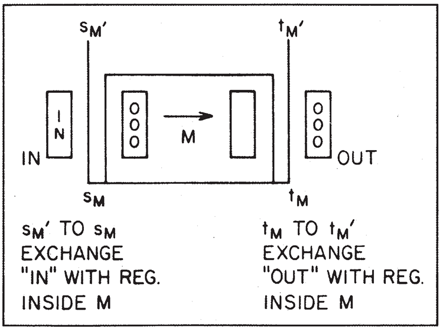
図10. 外部入力と出力を備えたピース
計算の最初のステップは、例えば \(s_M^\prime\) から始まり、\(M\) 内のレジスタとの交換を行うことです。
これにより、元の入力レジスタにゼロが入り、入力はボックス \(M\) 内の適切な場所に配置されます。カーソルは今、\(s_M\) にあります。(制御 NOT の交換方法については既に説明しました。) 次に、プログラムが \(s_M\) から \(t_M\) に進むと、出力はボックス \(M\) 内にあります。次に、M の出力レジスタはクリアされ、その結果は、この目的のために用意された、元々 0 が格納されている新しい外部レジスタに書き込まれます。これは、tyから\(t_M^\prime\)まで、空の外部レジスタのデータを\(M\)の出力レジスタと交換することによって行われます。
ここで、このような単位を様々な方法で接続することを検討できます。例えば、最も明白な方法は連続接続です。最初に \(M\) を実行し、次に \(N\) を実行したい場合、図 11 のように、一方の終端側をもう一方の始端側に接続して、新しい有効演算子 \(K\) とハミルトニアンを生成します。\(H_K\) の場合、
\[
H_K(s_K, t_K) = H_M(s_K, t)+ H_N(t, t_K)
\]
図11. 連続した操作
一般的な条件文、つまり、\(a= 1\) の場合は \(M\) を実行するが、\(a = 0\) の場合は \(N\) を実行する、は図12のように記述できる。この
\[
\begin{align}
H_{cond}(s_c, t_c) =& (s_M^*as_c+t_c^*a^*t_M \\
\\
&+ s_N^*a^*s_c+t_c^*at_N+c.c.) \\
\\
&+H_M(s_M, t_M) + H_N(s_N, t_N)
\end{align}
\]

図12. 条件文：\(a = 1\) の場合は \(M\)、それ以外の場合は \(N\)
CONTROLLED NOT は \(M=NOT b\) の特別なケースであり、\(H\) は次のようになります。
\[
H_{NOTb}(s,t) = s^*(b+b^*)t + c.c
\]
そして \(N\) は演算なし \(s^*t\) です。
別の例として、図6で説明したガベージクリア装置を、2つのマシン（マシンとその逆）を作るのではなく、同じマシンを使用し、スイッチを使用してデータを反対方向にマシンに送り返すことで対処できます（図13を参照）。

図13. ゴミ除去装置
このシステムには、元々常に 0 に設定されている特別なフラグ \(f\) があるとします。また、入力データは外部レジスタにあり、出力を保持するために空の外部レジスタがあり、マシンレジスタはすべて空（0 を含む）であるとします。スタートライン \(s\) に到達します。
まず最初に、外部入力を（CONTROLLED NOT を使って） \(M\) にコピーします。次に\(M\) が動作し、カーソルが図の一番上の行に移動します。\(M\) の出力を外部出力レジスタにコピーします。これで \(M\) にはゴミが含まれます。次に\(f\) をNOT \(f\) に変更し、スイッチの反対側の行に移動し、\(M\) を通って戻り、ゴミをクリアして入力を元に戻します。
データをコピーして再度コピーすると、レジスタの1つ（最初にコピーしたレジスタ）が0になります。コピー後、（\(f\) が変更されているため）別の行でデータが出力されます。そこで\(f\)が0に戻され、\(t\)で出力されます。つまり、\(s\)と\(t\)の間に、次の特性を持つ新しい装置が誕生します。
開始時には、IN と呼ばれるレジスタに入力データが格納されています。OUT と呼ばれる外部レジスタには 0 が格納されています。内部フラグは 0 に設定され、\(M\) ボックスはすべてのデータが空になっています。この処理の終了時（時刻 \(t\)）には、入力レジスタにはまだ入力データが、出力レジスタには演算子 \(M\) の出力が格納されています。ただし、\(M\) はまだ空であり、フラグ \(f\) は 0 にリセットされます。
コンピュータプログラムにおいて、同じサブルーチンを何度も使用できることも重要です。もちろん、論理的な観点から言えば、使用するたびにそのプログラムを何度も書き直すことで実現できますが、実用的なコンピュータでは、特定の操作を一度だけ実行するコンピュータ部分を一度だけ構築し、その部分を何度も使用できる方がはるかに優れています。
ここで可能性を示すために、まず、2 回連続して繰り返したい操作があるとします（図14を参照）。フラグ \(a\) が条件 0 の状態でsから開始し、行に沿って進みます。最初に起こることは、\(a\)の値を変更することです。次に、操作\(M\)を実行します。\(a\) を変更したため、最初に入った一番上の行ではなく、一番下の行に戻ります。これにより、プログラムは \(a\) を再び変更する状態に戻り、元に戻します。
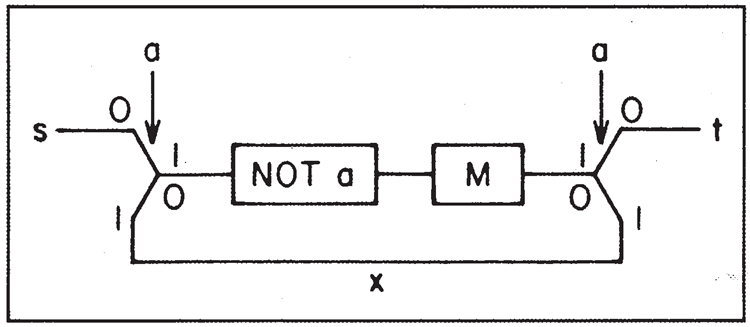
図14. Mを2回行います。
今回は\(M\)を通過すると、
aが上の線に沿って進み、
終端\(t\)に到達します。これに対するハミルトニアンは
\[
\begin{align}
Hy_{MM}(s,t) =& (s_N^* a^* s + s_M^*(a^* + a)s_N \\
\\
&+x^*a^* t_M +s_N^* ax \\
\\
&+ t^*at_M + c.c.) \\
\\
&+ H_M(S_M, t_M)
\end{align}
\]
もちろん、このスイッチング回路を何度も使用すれば、ある操作を何度も繰り返すことができます。例えば、同じ処理を 3 回連続して（ネストされた連続）、図15に示す装置を使って 8 回操作を行うことができます。そのためには、\(a, b, c\) という 3 つのフラグが必要です。操作を再度実行する際にフラグが必要なのは、操作が何回実行されたか、プログラムのどこにいるかを記録しておく必要があるためです。そうしないと、元に戻すことができなくなります。

図15. M を 8 回実施
通常のコンピュータのサブルーチンは、何が起こったかの記録を残さずに、使用したり空にしたり、また使用したりできます。しかしここでは、サブルーチンの使用サイクルのどこにいるかを正確に記録する必要があり、フラグを用いてそれを行います。ある場所からサブルーチンが呼び出され、別の場所に戻らなければならない場合、別の時に呼び出されると、その起源と最終目的地が異なるため、それぞれのケースで、サブルーチンがどこから来て、どこに行くべきかを個別に把握し、記録しておく必要があります。そのため、より多くのデータを保持する必要があります。可逆マシンでサブルーチンを何度も使用することは、一般的なマシンよりもわずかに難しいだけです。これらの考慮事項はすべて、Fredkin、Toffoli、Bennettの論文に記載されています。
このスイッチと、ツリー内での同様のスイッチの連続的な使用によって、メモリ内の任意のポイントにデータを誘導できることは明らかです。メモリとは、単にレジスタがあり、そこにデータをコピーしてプログラムを返すことができる場所です。カーソルはデータに追従する必要があります。データをコピーした後、カーソルを再び移動させるために、反対方向に設定された別のツリースイッチセットが必要であり、システムが可逆性を維持する必要があると思います。
図16 は、カーソルが \(s\) から \(t\) まで正味何回通過したかを記録する、インクリメンタルバイナリカウンタ（3 ビット \(a,b,c\) で、\(c\) が最上位ビット）を示しています。これらのいくつかの例を見れば、SWITCH と NOT を使ってあらゆるコンピュータ関数を構成できることが十分にわかるでしょう。これ以上詳しく説明する必要はありません。
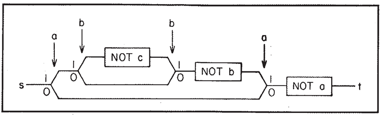
図16. インクリメントカウンタ（3ビット）
結論
これらの例から明らかなのは、この量子マシンは量子力学の微分方程式の「特定の性質」の多くを実際には使用していないということです。
我々が行ったのは、従来の順次アーキテクチャのデジタルマシンを可能な限り模倣することだけです。これは、従来のマシンにおけるトランジスタの使用に似ています。従来のマシンでは、トランジスタのアナログ動作の連続性をすべて適切に使用するのではなく、飽和したオンまたはオフのデジタルデバイスとして動作させ、システムの動作の論理的分析を容易にします。さらに、このシステムは完全に順次的です。例えば、2 つの \(k\) ビット数の比較（排他的論理和）においても、各ビットを順次実行する必要があります。これらの可逆量子システムにおいて、同時実行によって得られる速度を得るために何ができるかについては、ここでは研究されていません。
私は理論的かつ学術的な理由から、完全かつ可逆的なシステムを研究してきましたが、そのような小さな機械が実用化されるのであれば、機械の動作中に不可逆的でエントロピーを生み出す相互作用が頻繁に発生しても不思議ではありません。
例えば、長時間の計算では、カーソルが確実にどこかの地点に到達し、そこから再び逆戻りできないようにすることが賢明であることが判明するかもしれません。あるいは、非可逆メモリストレージ（あまり使用されない項目用）を可逆ロジックや短期可逆ストレージレジスタなどに接続することが実用的であることが判明するかもしれません。繰り返しますが、有線や光の方が容易かつ高速な場合、より遠距離の通信のために、結合されたサイトのチェーンに固執する必要はありません。
いずれにせよ、ビットが原子サイズになり、量子挙動が支配的になるまでは、物理法則はコンピューターのサイズを縮小する上で何の障害にもならないようです。
参考文献
-
1. C.H. Bennett, “Logical Reversibility of
Computation,”(計算の論理的可逆性) IBM Journal of Research
and Development, 6 (1979), pp. 525-532.
- 2. E. Fredkin and T. Toffoli, “Conservative
Logic,”(保守的論理) Int. J. Theor. Phys., 21 (1982), pp.
219-253
- 3. C.H. Bennett, “Thermodynamics of Com-
putation—A Review,”(計算の熱力学―レビュー) Int. J. Theor. Phys.,
21 (1982), pp. 905-940
- 4. T. Toffoli, ‘“‘Bicontinuous Extensions of
Invertible Combinatorial Functions,’(可逆な組合せ関数の双連続拡張)
Mathematical Systems Theory, 14 (1981),
pp. 13-23
- 5. L. Priese, ‘On a Simple Combinatorial
Structure Sufficient for Sublying Non-
Trivial Self Reproduction,”(非自明な自己増殖を包含するのに十分な単純な組合せ構造について) Journal of Cy-
bernetics, 6 (1976), pp. 101-137
参考文献の提供にご協力いただいたT. Toffoli氏に感謝申し上げます。